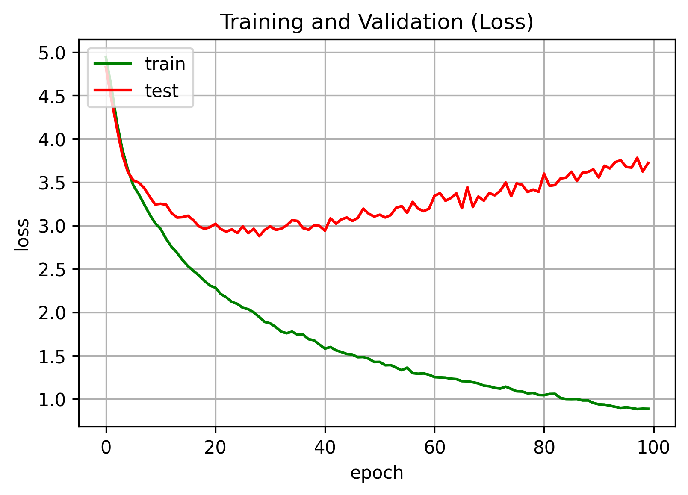

Machine Learning Library
We use Keras from Tensorflow to build our Pokémon classification model. Tensorflow provides great documentation on Image Classification for anyone to start off! Minor, albeit time consuming, tweaks were made to our model in order to increase the accuracy of our predictions.
Collecting the Data
This was easy since Pokémon data is pretty much everywhere. We found this Kaggle dataset by Lance Zhang that had everything we needed. 149 classes of Pokémon from generation one totaling over 7,000 images. That's roughly 25-50 images per Pokémon for our training model to work with. No web scraping required!
Preprocessing the Data
Before any training, we need to prep our data. Not only do we want to make sure we read the images, we also want to perform some Image data augmentation. Image data augmentation is used to expand the training dataset in order to improve the performance and ability of the model to generalize.


Create the model
The Sequential model is a linear stack of layers. It is the simplest model for beginners to start with for neural networks that are composed of a single stack of layers connected sequentially.

Compile and train the model
Before we train our model, we will implement the Keras EarlyStopping method. This will stop the training as soon as the validation error reaches a minimum as defined by the patience variable.

Below, we set max epochs to 100 however the model stops at epoch 78 because of the EarlyStopping validation we implemented above.

Ideally, we would stop the training as soon as the validation error reaches a minimum. When the validation error stops decreasing and starts to go back up, it is an indication that the model started to overfit the training data. If our model does much better on the training set than on the test set, then we are probably overfitting the data.
Training Results
With the help of Plotly, we are able to visualize our training and validation results by epoch from beginning to end. Let's take a look!


more text here soon...